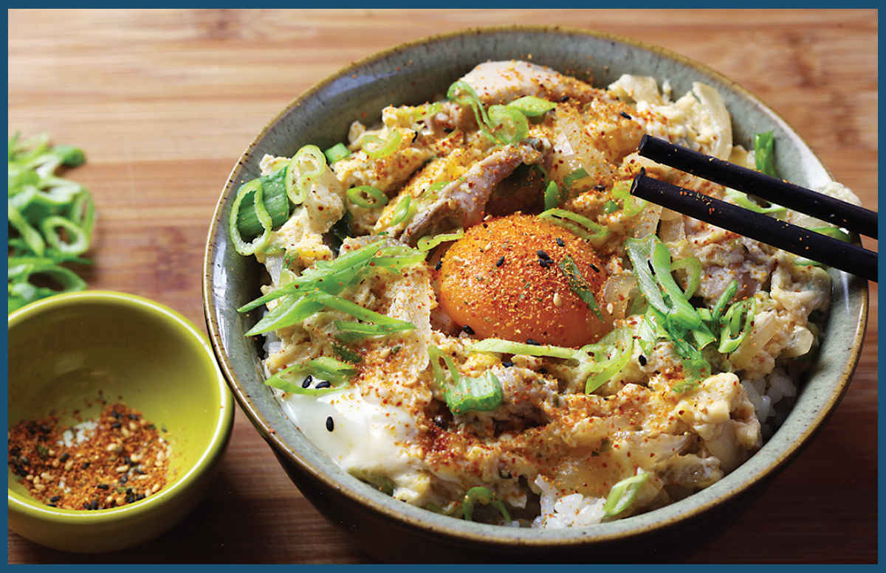

OYAKODON

This is Japanese soul food.
In Japanese, oya means “parent” and ko means “child.” In this case, the oya and the ko are chicken and egg. To make it, I start with the classic Japanese sweet and savory combination of dashi, soy sauce, sake, and mirin or sugar (you can use diluted tsuyu, here, in place of all of these ingredients). After bringing the mixture to a simmer, I add a thinly sliced yellow onion. If you want to get all fancy or plan on making this a lot, you can spring for a donburi pan, a small, saucer-like skillet designed specifically for simmering ingredients destined for rice topping. Otherwise, an 8-inch skillet works well for two portions, or a wok will do the job for four.
I like to use a little bit more broth than is typical—I start with about a cup for every three eggs—because I like to simmer it down to tenderize the onion and to concentrate the flavor of the stock. I find that cooking the onions for a full 5 minutes at a hard simmer before adding some thinly sliced chicken gives them plenty of time to tenderize.
I also like to use boneless, skinless chicken thighs, which stay juicy as they simmer, though you can easily use chicken breast if you prefer. Just be sure to slice the chicken thin so that it cooks rapidly, and don’t let it overcook! Five to 7 minutes is plenty of time for thighs, and 3 to 4 minutes should do for breasts.
Once the chicken is cooked through, I add some sliced scallions. If you can get your hands on mitsuba, this is the place to use it. It’s a Japanese herb that looks and tastes a bit like parsley, but the flavor is much milder. The aroma reminds me a little of watercress, but without any of the pepperiness. It won’t make or break the dish, but it’s nice to have if you can find it.
Next, I add eggs. The key here is to not overbeat them. I like to see distinct sections of egg white and yolk. Chopsticks are my favorite tool for beating eggs like this, and the chopsticks can then be used to scatter the eggs as you drizzle them into the broth, just as you would do for egg drop soup (here). Traditionally, the eggs are cooked until just barely set, though you can cook them as hard or soft as you’d like. Just remember: eggs always continue cooking a bit on their way to the table, so stop cooking when they are a little bit underdone.
Once the eggs are cooked, I pour the contents of the pan over rice. There will be quite a bit of extra juice. This is fine. It should soak into the rice and flavor the entire bowl.
If you want to get extra fancy, you can separate one of the egg yolks and reserve it to add back to the top of the bowl before serving.